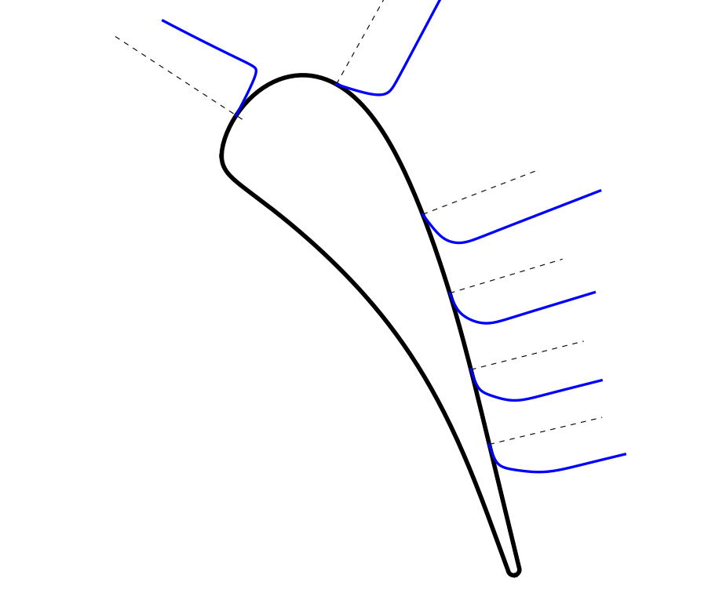
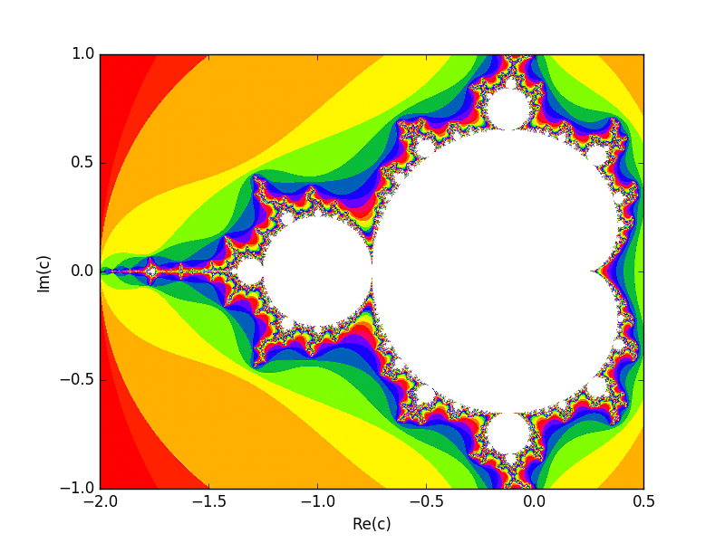
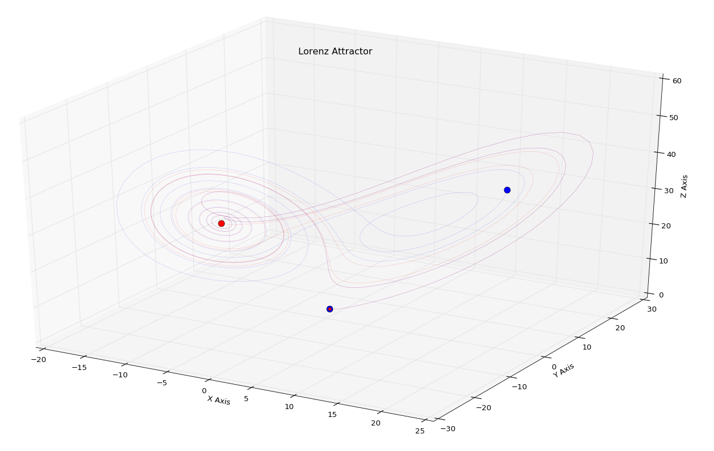

The purpose of this page is to gather all together the works I performed during my studies both for academic purpose and just for fun. Some works has been built from scratch other following the hint of someone smarter than me (Thanks :) ). I choose to try to collect this all together so that they could be useful for someone as other works have been useful for me.
Master Degree
Some Matlab/Octave script I developed during the last two year of University:
-
A script to solve the Heat Equation that makes use of finite difference space discretization and Euler time discretization both implicit and explicit.
-
A Solver of the Riemann Problem for the Traffic equation
-
A Solver of the Riemann Problem for the Burgher equation
-
A Finite Volume code for the Burgher equation with the Godunov scheme. This is a very smart way to compute the numerical fluxes at the cells' interfaces, if you are interested take a look here
-
Other two script that generates the GUI for the Heat Equation and Burgher Equation
-
Some finite differences schemes in order to solve in a 2D rectangular domain the equation of Laplace, Poisson and of the Heat.
-
A finite differences scheme to solve the equation of Alembert in an 'infinite' domain.
VKI works
Some stuffs I worked on during the Internship and the Research Master at von Karman Institute.
- TULABS: this is my very first laboratory experience, the aim is to evaluate the performances and measure the features of the flow field in an axial compressor.
Some MATLAB/Octave script to compute compressible inviscid flow in quasi 1-D duct
-
Sod shock tube solver. This is a simple script that solve the shock tube problem. The space is discretize with the finite volume method using the upwind Roe's Scheme while the temporal part is discretize with an Euler explicit.
-
The same alghoritm of the shock tube preesented before applied to a Quasi 1D nozzle.
-
A python script to compute the normals to a given 1D line (airfoil in this case) and plot a variable along these lines. I used it to create some fancy plot in my project presentation.
 -
Others python scripts I used to generate plot from the CFD results
-
Would you like to generate beautiful fractal like the one in the cover of this page? (well non so beautiful). Here you have a script the compute the Mandelbrot. Many thanks to the Rosetta code project for the help. Take a look on it it is very cool.
 -
Funny python script that solve numerically the Lorenz system. Play with the initial conditions and see what happens.
